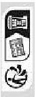
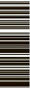
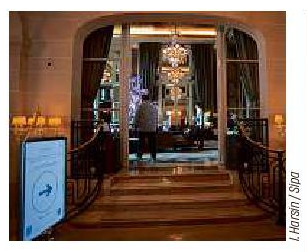

<< 20 MINUTES AVEC >>
Claire Vallée
La cheffe végane
étoilée veut << imaginer
ce que sera la cuisine
de l'avenir >> P.6
IMPRIMÉ SUR PAPIER RECYCLÉ NE JETEZ PAS CE JOURNAL SUR LA VOIE PUBLIQUE : DONNEZ-LE OU RECYCLEZ-LE. MERCI!
 Claire Vallée
La cheffe végane
étoilée veut << imaginer
ce que sera la cuisine
de l'avenir >> P.6
Vendredi 14 avril 2023
PARIS (8E)
Des jeunes inscrits
à Pôle emploi poussent
les portes du Crillon P.3
RÉFORME DES RETRAITES
La mobilisation
à la française, un art
qui séduit nos voisins P.4
TÉLÉVISION
Bas les masques
sur les costumes
de << Mask Singer >> P.10
20minutes.fr
N° 3832